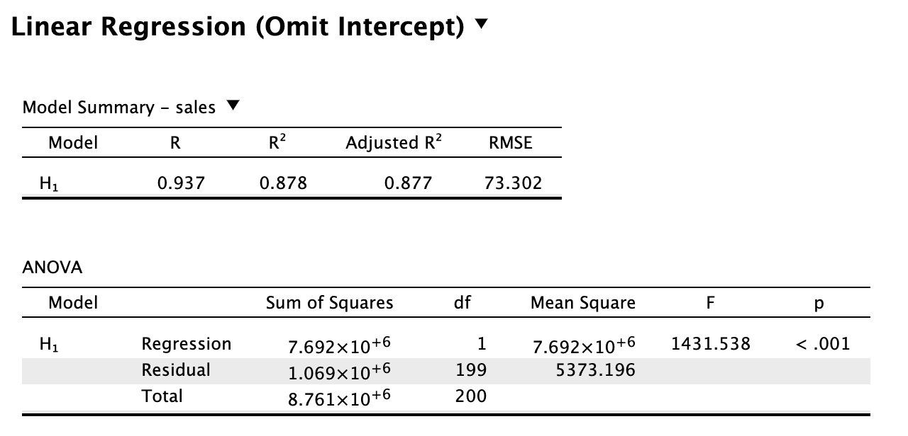
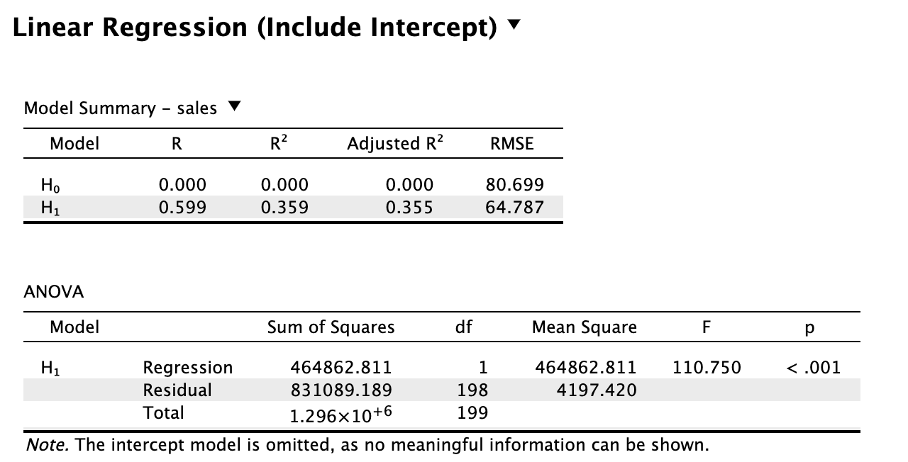

In linear regression, we calculate regression coefficients, which we use to predict the data. The difference between prediction and observation then informs us of the accuracy of the model. The interpretation of the various metrics (e.g., \(t\)-statistic for the regression coefficients, \(F\)-statistic for the overall model accuracy) depends on various assumptions of the linear model. A core assumption here is that there is no systematic error: our model should be equally accurate/wrong across the whole range of its predictions
We can fit a regression model with one predictor (airplay), and include the intercept (done by default)
mainModel <-lm(sales ~ airplay, data = data)mainModel$coefficients
(Intercept) airplay
84.872508 3.939182
But, we can also choose to omit the intercept, and only estimate a single \(b\) (for airplay):
omitInterceptModel <-lm(sales ~-1+ airplay, data = data)omitInterceptModel$coefficients
airplay
6.51522
For both models, their regression coefficients dictate what they predict:
\({\text{model prediction with intercept}} = 84.87 + 3.94 \times \text{airplay}\)
\({\text{model prediction without intercept}} = 6.52 \times \text{airplay}\)
We can plot sales and airplay, and add the regression lines for both models (the lines show what each model predicts). The slopes of these lines are dictated by the \(b_1\) weights, while the overall height of the lines is dictated by the \(b_0\) weights. For the model without an intercept, \(b_0\) is set to 0, while in the intercept model \(b_0\) is allowed to be different from 0. You can see this in the plot below, where the purple line crosses the y-axis at \(84.87\) (i.e., for 0 airplay, it predicts \(84.87\) sales), while the orange line crosses the y-axis at 0 (i.e., for 0 airplay, it predicts 0 sales).
From this plot, it seems that the model without intercept is still doing a good job of capturing the data. The regression line even has a steeper slope for this model compared to the main model. If we would look at the associated t- and p-values for the regression coefficient of airplay, they would be even more extreme for the model without the intercept. That’s good right?
Well, the linear model that we use to assess the effects of the predictor variable has various assumptions. One of the most important assumptions is that there is no systematic error in the model (i.e., homoscedasiticity of error). In other words, our model should be equally accurate/wrong across the whole range of its predictions. To assess this assumption, we can look at a scatterplot of the standardized (i.e., z-scores) model predictions and residuals, and hope to see an uncorrelated cloud of points, rather than some other shape (e.g., funnel shape).
We can see that while the residuals on the left seem uncorrelated with the predicted values (correlation residual vs. prediction = 0), there is some systematic error going on in the model without intercept (correlation residual vs. prediction = -0.439).1
By omitting the intercept, we have introduced systematic error into our model: because the regression line needs to start at 0 (instead of 85), it will systematically underestimate low album sales, while it will systematically overestimate high album sales. The systematic error due to ignoring the intercept endangers the interpretation of the other regression coefficients: we will either under- or overestimate their influence.
The systematic error introduced by omitting the intercept is also reflected by the Q-Q plots of the standardized residuals. Most of the dots are above the red line that indicates equivalence, which indicates an overall bias of the residuals: in addition to underestimating low album sales/overestimating high album sales, there is an overall underestimation bias of the model:
mean residuals = 0.195 for the model without intercept
mean residuals = 0 for the model with intercept
In conclusion, while the model might still have favorable model metrics, the systematic error indicates that the model is miss-specified and fails to capture important characteristics of the data (namely, its mean). Consequently, the various metrics (\(b\)’s, \(t\), \(F\)) that are computed cannot be safely interpreted.
Why does the model without intercept still predict so well?
Disclaimer: this is somewhat of a rabbit hole, so proceed with caution.
The .jasp file with the analyses can be downloaded here, and the results can be previewed here.
Having said that, it can still be interesting to look into why these metrics are not to be trusted. The results given by software are still based on some computation, so how can these computations miss their mark?
The results are fairly counter-intuitive, because the \(R^2\) value is even higher for the model without intercept, than the model with intercept:
 
The proportion of explained variance has a general notation: \[ R^2 = \frac{SS_M}{SS_T}. \] It is the model sum of squares (i.e., squared differences between prediction and the grand mean), divided by the total sum of squares (i.e., squared difference between observation and the grand mean). If we compute this for the model with the intercept, we get the following:
SS_model <-sum((mainModel$fitted.values -mean(data$sales))^2)SS_total <-sum((data$sales -mean(data$sales))^2)SS_model / SS_total # R2 for the model with intercept
[1] 0.3587037
There is about 35% explained variance by looking at airplay. What is happening implicitly here, is that we are using the predictions of the null model (i.e., the grand mean): - The model sum of squares is the difference between the alternative model and the null model predictions - The total sum of squares is the prediction error of the null model
When we include the intercept, the null model also includes the intercept, which allows it to predict the grand mean. This allows us to use “mean(sales)” and “predictions of the null model” interchangeably.
However, when we exclude the intercept, the null model does not have an intercept, and so it simply predicts \(0\). Now, the predictions of the null model are not equal to “mean(sales)” anymore, but to 0. If we want to apply the \(R^2\) formula, we have to incorporate that information:
SS_model <-sum((omitInterceptModel$fitted.values -0)^2) # difference alternative and null predictionsSS_total <-sum((data$sales -0)^2) # error of the null modelSS_model / SS_total # R2 for the model without intercept
[1] 0.8779544
We have retrieved the \(R^2\) reported by JASP! It is much higher than the proportion of explained variance of the model with intercept, so why is that? Model comparison is inherently a relative endeavor: we compare one model’s predictions to another model’s predictions. When we compute an F-statistic or \(R^2\) for a model, we compare it to another (e.g., null) model. When we omit the intercept, it is removed from both models. Without an intercept for the null model, the increase in predictive accuracy is much greater when adding the predictor variable, since it can explain some of the variance that is normally explained by the intercept.
This case underscores why assumptions matter: we might have found an alternative model (no intercept) that outperforms its null-equivalent by a greater margin than another alternative model (intercept). However, this either indicates the alternative model does fairly well, or the null model does very poorly. In the case of no intercept, the null model is predicting so poorly, that by comparison, the alternative model is awesome. Luckily, we are now equipped with various assumption testing tools that allow us to assess whether the models are miss-specified.
Take-aways
Omitting the intercept can lead to a miss-specified model (i.e., a model with systematic bias/error).
When the model is miss-specified, inference based on its estimates becomes unreliable and we run the risk of over- or under-estimating the population parameters.
Exercise: based on the .jasp file linked above, transform the sales variable by subtracting its mean value (gif). Then, rerun the linear regressions (with and without intercept) - what do you observe now?
If we omit the intercept from the alternative model, it is also omitted from the null model.
This generally leads to a larger gap between the null and alternative model, because the alternative model still has its continuous predictor to explain variance.
Metrics that compare the alternative to the null model (e.g., F or \(R^2\)) are especially affected by omitting the intercept.
Footnotes
It can also be the case that such correlations between residual and prediction are 0, but there is still systematic error, such as a funnel shape (example here); this is why a scatterplot is much more informative about this assumption than only looking at a correlation value.↩︎


{kind=link}
{kind=link}